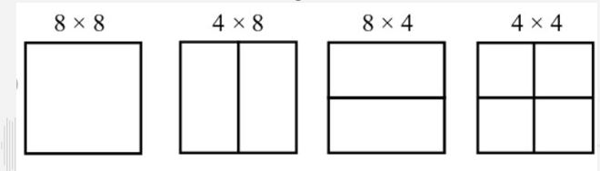
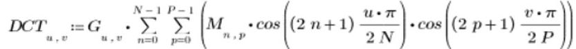
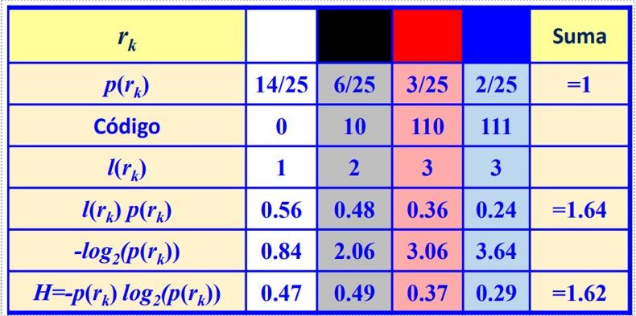

Si quieres esuchar el contenido de ésta página, reproduce lo siguiente:
¿Qué es?
Windows Media Video, o WMV, es un codec de compresión de video desarrollado por Microsoft Corporation para
gestionar contenidos de video y aplicaciones de streaming por Internet en ordenadores personales. Cabe
aclarar que típicamente puede referirse a un códec de video y a un archivo contenedor, sin embargo, aquí estaremos hablando del codec.
Historia
En 2003, Microsoft redactó una especificación de compresión de video basada en su formato WMV 9 y la envió a
SMPTE para su estandarización. El estándar fue aprobado oficialmente en marzo de 2006 como SMPTE 421M, más
conocido como VC-1 , lo que convierte al formato WMV 9 en un estándar abierto. VC-1 se convirtió en uno de
los tres formatos de video para el disco de video Blu-ray , junto con H.262 / MPEG-2 Part 2 y H.264 / MPEG-4
AVC.
Versiones más destacables
- Windows Media Video 7: Códec basado en DirectX Media Objects (DMO)
- Windows Media Video Screen 9: Optimización para capturas de pantalla secuenciales de baja tasa de bits o screencasts
- Windows Media Video Image 9: Optimización para codificar video a partir de imágenes de mapa de bits secuenciales
- Perfil avanzado de Windows Media Video 9 (actual): Códec basado en DMO. Formato compatible con VC-1.
Características
- Estos archivos utilizan el contenedor ASF (Advanced Systems Format). Este es el contenedor digital de Microsoft para audio y video. En el contenedor se maneja tanto un archivo de audio comprimido como uno de video. También se puede empaquetar en contenedores Matroska o AVI.
- El codec utilizado para trabajar con el video es WMV (Windows Media Video). Suele emplear el codec WMA para el audio.
- Los archivos que utilizan el codec WMV tienen una extensión resultante en .wmv
- Los archivos WMV ocupan poco espacio, por lo que son altamente usados en sitios web debido a su poco tiempo de carga.
- Su principal competencia son MPEG-4, AVC, AVS, RealVideo.
- Aunque fue desarrollado para Windows. debido a software como Flip4Mac y FFmpeg el formato WMV es compatible con Mac y en Linux.
- WMV sufre una pérdida menor en la calidad de imagen para minimizar el tamaño del archivo.
Perfiles y niveles de codificacion

Proceso de codificacion
WMV sigue el estándar VC-1 que consiste principalmente en los siguientes pasos:
- Separación en macrobloques
- Transformada del Coseno Discreta
- Cuantificación
- Compensación de movimiento
- Codificación de entropía (mediante el algoritmo de Huffman)
Estructura de video codificada
Cuando VC-1 codifica una imagen, divide la imagen en macrobloques. Cada macrobloque de 16x16 se compone de 6
bloques de muestra de 8x8 (4 bloques Y, 1 bloque U y 1 bloque V). Además, el método de codificación puede
dividir un bloque individual de 8x8 en 2 bloques de 8x4, 2 bloques de 4x8 o 4 bloques de 4x4.

Transformada del coseno discreta
Se utiliza la Transformada discreta del coseno para convertir bloques de muestras en un dominio de
transformación para facilitar una codificación más eficiente. La transformación puede funcionar en el bloque
completo de 8x8 o en cualquiera de los 3 tamaños de subbloque admitidos (8x4, 4x8 o 4x4). A diferencia de
muchos estándares de códec que preceden a VC-1, la especificación define un método de transformación con
precisión de bit al que se espera que todas las implementaciones se ajusten para minimizar el error de
transformación.

Cuantificación
La cuantificación es el paso de compresión que potencialmente pierde la mayor cantidad de información en un
esquema de compresión con pérdida como VC-1. Este códec (a diferencia de muchos otros) define una forma
directa de escalar los coeficientes mediante el parámetro de cuantificación en lugar de especificar matrices
de cuantificación.
Compensación de movimiento
Permite reducir de manera eficiente la redundancia temporal en secuencias de video. Este proceso consiste en tres pasos:
- Para cada uno de los macrobloques (MB) de una imagen actual encuentra su mejor emparejamiento (match) de otros MB pertenecientes a una o varias imágenes de referencia. Genera como resultado el vector de movimiento MV={mvx, mvy}.
- El mejor match encontrado constituye la predicción de ese MB. Ambos MB se restan para obtener el MB residual, proceso conocido como compensación de movimiento.
- Finalmente, ese MB residual es codificado y comprimido junto con su MV
Codificación Huffman
El principio básico es utilizar un código de longitud variable, asignando las palabras de código de menor longitud a los niveles de gris más probables. Para esto se genera un árbol de codificación Huffman mediante los siguientes pasos:
- Ordenar la lista de símbolos de datos en orden de probabilidad creciente.
- Combinar los dos símbolos de menor probabilidad en un nudo y asignar la probabilidad conjunta de estos símbolos al nudo.
- Reordenar los restantes símbolos de datos y nudos en orden de probabilidad creciente y repetir el paso 2, hasta llegar al nudo raíz:
Codificación de entropía
Uno de los principales tipos de codificación de entropía crea y asigna un código único sin prefijo a cada
símbolo único que aparece en la entrada. De esta manera, luego comprimen los datos reemplazando cada símbolo
de entrada de longitud fija con la correspondiente palabra clave de salida sin prefijo de longitud variable.
La longitud de cada palabra de código es aproximadamente proporcional al logaritmo negativo de la
probabilidad de aparición de esa palabra de código. Por lo tanto, los símbolos más comunes usan los códigos
más cortos.
